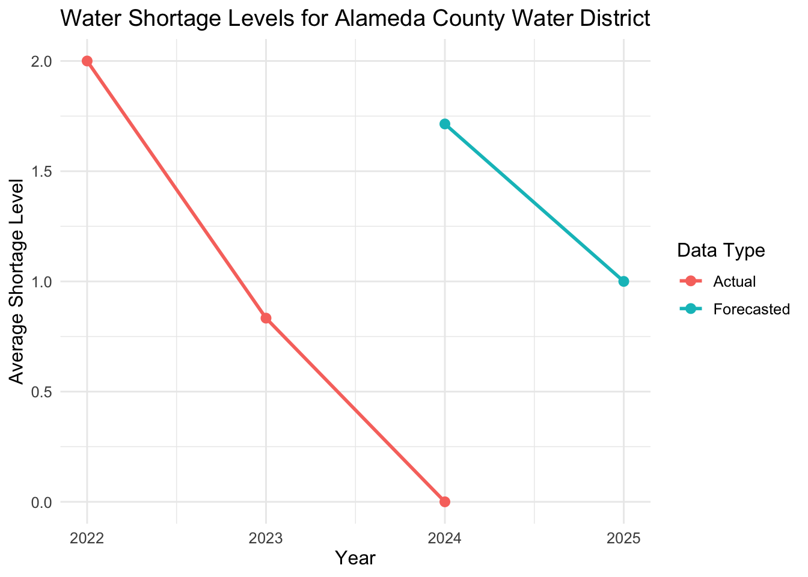

# Load packages.
library(DBI)
library(duckdb)
library(ggplot2)
library(tools)
# Initialzie database connection to previously created .duckdb file.
connection_to_db <- dbConnect(duckdb::duckdb(), "shortage_db.duckdb")A Temporal Look At Californias Regional Shortage Levels
In this Quarto document we will be taking a look at actual & forecast monthly shortage values grouped by year. Our actual shortage values range between 2022-2024 while our forecast values are from a range between 2024-2026.
Assuming the necessary pre-processing has already been completed, the data is being accessed through a duckdb connection to our sql database. We will be running queries in order to create visuals for some of the organizations available.
Please review the following files for previous steps: initial_data_cleaning.R - data initialization and cleaning. shortage_db.sql - loading data into tables and performing analysis via sub-tables. shortage_db.duckdb - db file. OPTIONAL data/results/combined_yearly_avg.csv - result table used below but output as csv.
Key to understanding shortage levels:
0 = No Shortage 1 : < 10% Shortage 2 : 10-19% Shortage 3 : 20-29% Shortage 4 : 30-39% Shortage 5 : 40-49% Shortage 6 : Greater than 50% Shortage
For this assignment our goal is to answer the following question:
How have water shortage levels in California changed over time, and are they reasonably forecasted through time?
Example 1: Organization 193 (Beverly Hills)
# Selecting the following variables from our combined_yearly_avg only for org_id = 193.
# Ordering by year / data_type.
org193 <- dbGetQuery(connection_to_db, "
SELECT supplier_name, year, data_type, avg_shortage_level
FROM combined_yearly_avg
WHERE org_id = 193
ORDER BY year, data_type
")
# View query table.
print(org193) supplier_name year data_type avg_shortage_level
1 city of beverly hills 2022 Actual 2.5
2 city of beverly hills 2023 Actual 2.0
3 city of beverly hills 2024 Actual 2.0
4 beverly hills city of 2024 Forecasted 0.0
5 beverly hills city of 2025 Forecasted 0.0# Clean up org supplier name for plot title.
org_name <- toTitleCase(unique(org193$supplier_name))
# Plot data for organization grouped by data_type (i.e. actual/forecasted).
ggplot(org193, aes(x = year, y = avg_shortage_level, color = data_type, group = data_type)) +
geom_line(linewidth = 1) +
geom_point(size = 2.5) +
labs(title = paste('Water Shortage Levels for', org_name),
x = 'Year',
y = 'Average Shortage Level',
color = 'Data Type') +
theme_minimal() +
theme(text = element_text(size = 12))From our graph we can see that Beverly Hills despite carrying a 2-2.5 level shortage accross 2022-2024 but were forecasted to have a level of 0 between 2024-2025. Additionally no data was forecasted for 2026.
Example 2: Organization 1873 (Pasadena)
# Same query as the previous two except for org_id = 1873.
org1873 <- dbGetQuery(connection_to_db, "
SELECT supplier_name, year, data_type, avg_shortage_level
FROM combined_yearly_avg
WHERE org_id = 1873
ORDER BY year, data_type
")
# View query table.
print(org1873) supplier_name year data_type avg_shortage_level
1 city of pasadena 2022 Actual 2.00
2 city of pasadena 2023 Actual 2.25
3 city of pasadena 2024 Actual 2.00
4 pasadena city of 2025 Forecasted 0.00
5 pasadena city of 2026 Forecasted 0.00# Clean up org supplier name for plot title.
org_name <- toTitleCase(unique(org1873$supplier_name))
# Plot data for organization grouped by data_type (i.e. actual/forecasted).
ggplot(org1873, aes(x = year, y = avg_shortage_level, color = data_type, group = data_type)) +
geom_line(linewidth = 1) +
geom_point(size = 2.5) +
labs(title = paste('Water Shortage Levels for', org_name),
x = 'Year',
y = 'Average Shortage Level',
color = 'Data Type') +
theme_minimal() +
theme(text = element_text(size = 12))From our graph we can see that the City of Pasadena despite carrying a 2-2.25 level shortage accross 2022-2024 but were forecasted to have a level of 0 between 2025-2026. We should note that there was no values forecasted for 2024 therefore we see a gap in our data.
Example 3: Organization 23 (Alameda County Water District)
# Same query as the previous two except for org_id = 23.
org23 <- dbGetQuery(connection_to_db, "
SELECT supplier_name, year, data_type, avg_shortage_level
FROM combined_yearly_avg
WHERE org_id = 23
ORDER BY year, data_type
")
# View query table.
print(org23) supplier_name year data_type avg_shortage_level
1 alameda county water district 2022 Actual 2.0000000
2 alameda county water district 2023 Actual 0.8333333
3 alameda county water district 2024 Actual 0.0000000
4 alameda county water district 2024 Forecasted 1.7142857
5 alameda county water district 2025 Forecasted 1.0000000# Clean up org supplier name for plot title.
org_name <- toTitleCase(unique(org23$supplier_name))
# Plot data for organization grouped by data_type (i.e. actual/forecasted).
ggplot(org23, aes(x = year, y = avg_shortage_level, color = data_type, group = data_type)) +
geom_line(linewidth = 1) +
geom_point(size = 2.5) +
labs(title = paste('Water Shortage Levels for', org_name),
x = 'Year',
y = 'Average Shortage Level',
color = 'Data Type') +
theme_minimal() +
theme(text = element_text(size = 12))
From our graph we can see that the Alameda County Water District despite carrying showing a trend where the shortage level falls from 2 in 2022 all the way until 0 in 2024. They were forecasted to have a level of ~1.25-1 between 2024-2025. Additionally no data was forecasted for 2026.
Example 4: Organization 1238 (Inglewood)
# Same query as the previous two except for org_id = 1238.
org1238 <- dbGetQuery(connection_to_db, "
SELECT supplier_name, year, data_type, avg_shortage_level
FROM combined_yearly_avg
WHERE org_id = 1238
ORDER BY year, data_type
")
# View query table.
print(org1238) supplier_name year data_type avg_shortage_level
1 city of inglewood 2022 Actual 3
2 city of inglewood 2023 Actual 4
3 city of inglewood 2024 Actual 4
4 inglewood city of 2024 Forecasted 0
5 inglewood city of 2025 Forecasted 0# Clean up org supplier name for plot title.
org_name <- toTitleCase(unique(org1238$supplier_name))
# Plot data for organization grouped by data_type (i.e. actual/forecasted).
ggplot(org1238, aes(x = year, y = avg_shortage_level, color = data_type, group = data_type)) +
geom_line(linewidth = 1) +
geom_point(size = 2.5) +
labs(title = paste('Water Shortage Levels for', org_name),
x = 'Year',
y = 'Average Shortage Level',
color = 'Data Type') +
theme_minimal() +
theme(text = element_text(size = 12))From our graph we can see that the City of Inglewood despite showing the highest of all the other examples beginning from a shortage level of 3 level in 2022 increasing to a 4 in 2024 but where forecasted to have a level of 0 between 2024-2025. Additionally no data was forecasted for 2026.
Important! Make sure to shut down db.
dbDisconnect(connection_to_db, shutdown = TRUE)